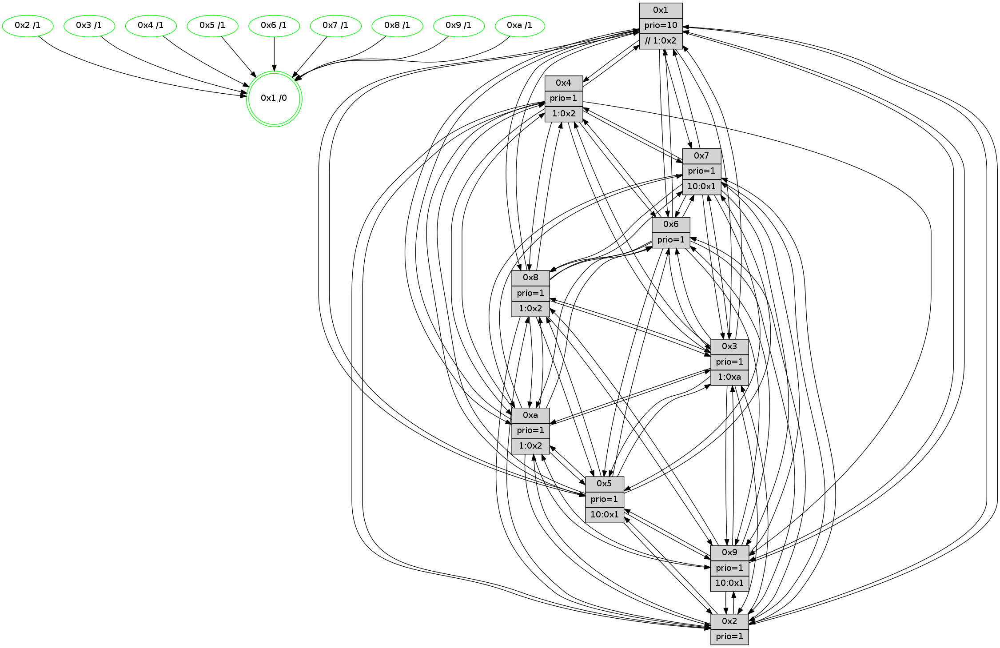

>> << IDX [start] -100 -25 -5 +0 +5 +25 +100 [1090.41373205]
 Previous packets
1085.001619 [Color(10) seq=282 @0:0 prio=1 >10.@1,1.@2,1.@3,1.@5]
1085.006067 [Color(3) seq=322 @0:0 prio=1 >1.@a]
1085.007568 [Hello(1): seq=602 sym=4,2,9,5,10,3,8,6,7 sysInfo=coloring-mode-on,ColoringModeRequestCalled stat=4:11,15,11,2/2:12,1,11,15/9:4,6,9,7/5:14,15,2,7/10:6,15,11,5/3:11,4,15,5/8:5,15,11,1/6:8,4,12,12/7:8,8,10,12]
1085.011975 [STC(1) #0.160 tree-change,inconsistent-stability,stable,to-color d=0]
1085.015756 [Hello(6): seq=693 sym=2,3,5,4,7,9,8,10,1 sysInfo=hasWarning stat=2:6,11,11,5/3:0,15,8,10/5:6,7,9,0/4:12,0,3,3/7:5,14,11,9/9:12,14,12,7/8:11,10,6,3/10:15,1,15,12/1:1,6,1,1]
1085.018260 [Color(8) seq=315 @0:0 prio=1 >1.@2,1.@3,1.@5,1.@a]
1085.020835 [Color(6) seq=325 @0:0 prio=1]
----------------------------------------------------------------------
1085.684951 beacon01(faad) #0 coord=01,02,03,04,05,06,07,0a,09,08 cycle=688.0ms assoc
-- color-indic=1 64 ac 91
1085.694933 beacon02(faad) #0 coord=01,02,03,04,05,06,07,0a,09,08 cycle=688.0ms assoc 64 3f a0
1085.704935 beacon03(faad) #0 coord=01,02,03,04,05,06,07,0a,09,08 cycle=688.0ms assoc 64 45 ed
1085.714934 beacon04(faad) #0 coord=01,02,03,04,05,06,07,0a,09,08 cycle=688.0ms assoc 64 32 07
1085.724935 beacon05(faad) #0 coord=01,02,03,04,05,06,07,0a,09,08 cycle=688.0ms assoc 64 48 4a
1085.734934 beacon06(faad) #0 coord=01,02,03,04,05,06,07,0a,09,08 cycle=688.0ms assoc 64 c6 9d
1085.744933 beacon07(faad) #0 coord=01,02,03,04,05,06,07,0a,09,08 cycle=688.0ms assoc 64 bc d0
1085.754937 beacon0a(faad) #0 coord=01,02,03,04,05,06,07,0a,09,08 cycle=688.0ms assoc 64 cd db
1085.774938 beacon08(faad) #0 coord=01,02,03,04,05,06,07,0a,09,08 cycle=688.0ms assoc 64 39 41
1085.786158 [Hello(8): seq=637 sym=5,2,3,4,9,6,7,10,1 sysInfo=hasWarning stat=5:15,9,12,0/2:8,5,7,8/3:7,13,11,14/4:5,0,2,9/9:2,7,14,3/6:15,6,11,12/7:2,11,12,2/10:7,3,15,3/1:3,13,1,0]
1085.788926 [STC(3)->1 #0.160 tree-change,inconsistent-stability,stable,to-color d=1]
1085.791017 [Hello(9): seq=637 sym=2,5,3,4,7,6,8,10,1 sysInfo=hasWarning stat=2:12,1,6,6/5:1,4,5,5/3:13,0,9,14/4:4,6,3,0/7:0,1,0,0/6:11,12,1,10/8:2,10,11,3/10:7,1,11,3/1:0,12,2,1]
1085.793706 [Hello(7): seq=693 sym=2,3,5,6,4,8,9,10,1 sysInfo=hasWarning stat=2:12,9,0,0/3:1,4,13,14/5:5,10,14,1/6:10,6,13,8/4:1,2,1,0/8:5,5,9,1/9:3,9,1,1/10:5,12,0,4/1:1,7,3,0]
1085.796723 [STC(2)->1 #0.160 tree-change,inconsistent-stability,stable,to-color d=1]
1085.798442 [STC(9)->1 #0.160 tree-change,inconsistent-stability,stable,to-color d=1]
1085.799735 [Color(1) seq=374 @0:0 prio=10 >>1.@2,1.@3,1.@4]
1085.801670 [Hello(4): seq=693 sym=5,7,6,2,3,9,8,10,1 sysInfo= stat=5:2,6,8,14/7:15,12,9,9/6:4,1,8,11/2:5,1,2,13/3:4,14,7,10/9:9,4,14,10/8:8,1,13,4/10:4,10,0,12/1:10,14,3,1]
1085.804505 [Color(9) seq=299 @0:0 prio=1 >10.@1,1.@2,1.@3,1.@5]
1085.809622 [TreeStatus(2)-.->1 #0.160 tree-change,inconsistent-stability,stable child=1]
1085.811673 [STC(7)->1 #0.160 tree-change,inconsistent-stability,stable,to-color d=1]
1085.813042 [STC(5)->1 #0.160 tree-change,inconsistent-stability,stable,to-color d=1]
1085.815245 [Color(7) seq=252 @0:0 prio=1 >10.@1,1.@2,1.@3,1.@5]
1085.817205 [Color(5) seq=300 @0:0 prio=1 >10.@1,1.@2,1.@3,1.@4]
1085.819096 [STC(4)->1 #0.160 tree-change,inconsistent-stability,stable,to-color d=1]
1085.822320 [Color(4) seq=273 @0:0 prio=1 >1.@2,1.@3,1.@5,1.@6]
1085.824102 [Hello(10): seq=626 sym=6,2,3,8,7,5,9,4,1 sysInfo=hasWarning stat=6:3,9,12,5/2:1,0,1,9/3:9,2,2,10/8:1,5,6,0/7:3,10,12,4/5:12,2,10,14/9:1,2,14,2/4:11,2,14,8/1:7,11,10,1]
1085.826908 [STC(10)->1 #0.160 tree-change,inconsistent-stability,stable,to-color d=1]
----------------------------------------------------------------------
1086.473081 beacon01(faad) #0 coord=01,02,03,04,05,06,07,0a,09,08 cycle=688.0ms assoc
-- color-indic=1 64 98 89
1086.483062 beacon02(faad) #0 coord=01,02,03,04,05,06,07,0a,09,08 cycle=688.0ms assoc 64 0b b8
1086.493064 beacon03(faad) #0 coord=01,02,03,04,05,06,07,0a,09,08 cycle=688.0ms assoc 64 71 f5
1086.503065 beacon04(faad) #0 coord=01,02,03,04,05,06,07,0a,09,08 cycle=688.0ms assoc 64 06 1f
1086.513063 beacon05(faad) #0 coord=01,02,03,04,05,06,07,0a,09,08 cycle=688.0ms assoc 64 7c 52
1086.523064 beacon06(faad) #0 coord=01,02,03,04,05,06,07,0a,09,08 cycle=688.0ms assoc 64 f2 85
1086.533065 beacon07(faad) #0 coord=01,02,03,04,05,06,07,0a,09,08 cycle=688.0ms assoc 64 88 c8
1086.543068 beacon0a(faad) #0 coord=01,02,03,04,05,06,07,0a,09,08 cycle=688.0ms assoc 64 f9 c3
1086.563071 beacon08(faad) #0 coord=01,02,03,04,05,06,07,0a,09,08 cycle=688.0ms assoc 64 0d 59
1086.575251 [Hello(2): seq=690 sym=4,5,7,6,3,9,8,10,1 sysInfo=hasWarning stat=4:11,13,15,8/5:9,11,4,0/7:13,15,13,11/6:0,12,6,10/3:10,12,3,7/9:3,10,5,6/8:15,2,1,9/10:9,12,8,10/1:9,10,5,0]
1086.578015 [Hello(6): seq=694 sym=2,3,5,4,7,9,8,10,1 sysInfo=hasWarning stat=2:6,11,12,6/3:0,15,9,10/5:7,8,10,0/4:13,1,4,3/7:6,15,12,9/9:13,15,13,7/8:12,10,6,3/10:0,1,0,12/1:1,7,1,1]
1086.580551 [Hello(1): seq=603 sym=4,2,9,5,10,3,8,6,7 sysInfo=coloring-mode-on,ColoringModeRequestCalled stat=4:12,0,12,2/2:12,1,11,0/9:4,7,9,7/5:14,0,3,7/10:7,15,12,5/3:11,4,0,5/8:6,0,11,1/6:9,5,12,12/7:8,9,11,12]
1086.583832 [Color(6) seq=326 @0:0 prio=1]
1086.587510 [Color(10) seq=283 @0:0 prio=1 >10.@1,1.@2,1.@3,1.@5]
1086.592604 [Color(3) seq=323 @0:0 prio=1 >1.@a]
----------------------------------------------------------------------
1087.261212 beacon01(faad) #0 coord=01,02,03,04,05,06,07,0a,09,08 cycle=688.0ms assoc
-- color-indic=1 64 24 8c
1087.271194 beacon02(faad) #0 coord=01,02,03,04,05,06,07,0a,09,08 cycle=688.0ms assoc 64 b7 bd
1087.281195 beacon03(faad) #0 coord=01,02,03,04,05,06,07,0a,09,08 cycle=688.0ms assoc 64 cd f0
1087.291195 beacon04(faad) #0 coord=01,02,03,04,05,06,07,0a,09,08 cycle=688.0ms assoc 64 ba 1a
1087.301196 beacon05(faad) #0 coord=01,02,03,04,05,06,07,0a,09,08 cycle=688.0ms assoc 64 c0 57
1087.311194 beacon06(faad) #0 coord=01,02,03,04,05,06,07,0a,09,08 cycle=688.0ms assoc 64 4e 80
1087.321197 beacon07(faad) #0 coord=01,02,03,04,05,06,07,0a,09,08 cycle=688.0ms assoc 64 34 cd
1087.331201 beacon0a(faad) #0 coord=01,02,03,04,05,06,07,0a,09,08 cycle=688.0ms assoc 64 45 c6
1087.351200 beacon08(faad) #0 coord=01,02,03,04,05,06,07,0a,09,08 cycle=688.0ms assoc 64 b1 5c
1087.363068 [Hello(8): seq=638 sym=5,2,3,4,9,6,7,10,1 sysInfo=hasWarning stat=5:15,10,13,0/2:9,5,8,9/3:7,14,12,14/4:6,1,3,9/9:3,8,15,3/6:15,7,11,12/7:3,12,13,2/10:8,4,0,3/1:4,14,1,0]
1087.366108 [Color(1) seq=375 @0:0 prio=10 >>1.@2,1.@3,1.@4]
1087.367779 [Hello(9): seq=638 sym=2,5,3,4,7,6,8,10,1 sysInfo=hasWarning stat=2:12,1,6,7/5:2,5,6,5/3:14,1,10,14/4:4,7,4,0/7:0,2,1,0/6:11,13,1,10/8:3,11,11,3/10:8,1,12,3/1:1,13,2,1]
1087.371041 [Color(2) seq=286 @0:0 prio=1]
1087.372986 [Hello(4): seq=694 sym=5,7,6,2,3,9,8,10,1 sysInfo= stat=5:2,6,8,14/7:15,12,9,9/6:5,2,8,11/2:6,1,2,13/3:4,15,8,10/9:9,4,14,10/8:9,1,13,4/10:5,11,1,12/1:11,14,3,1]
1087.376760 [Color(4) seq=274 @0:0 prio=1 >1.@2,1.@3,1.@5,1.@6]
1087.378534 [Color(5) seq=301 @0:0 prio=1 >10.@1,1.@2,1.@3,1.@4]
1087.380276 [Color(9) seq=300 @0:0 prio=1 >10.@1,1.@2,1.@3,1.@5]
1087.382170 [Hello(10): seq=627 sym=6,2,3,8,7,5,9,4,1 sysInfo=hasWarning stat=6:3,9,12,5/2:2,0,1,9/3:9,3,2,10/8:1,5,6,0/7:3,10,12,4/5:12,2,10,14/9:1,2,14,2/4:11,2,14,8/1:7,11,10,1]
1087.385171 [Hello(7): seq=694 sym=2,3,5,6,4,8,9,10,1 sysInfo=hasWarning stat=2:13,9,0,0/3:1,5,14,14/5:5,11,14,1/6:11,7,13,8/4:1,3,2,0/8:6,5,9,1/9:3,9,1,1/10:6,12,1,4/1:2,7,3,0]
1087.389892 [Color(7) seq=253 @0:0 prio=1 >10.@1,1.@2,1.@3,1.@5]
----------------------------------------------------------------------
1088.049341 beacon01(faad) #0 coord=01,02,03,04,05,06,07,0a,09,08 cycle=688.0ms assoc
-- color-indic=1 64 e0 82
1088.059323 beacon02(faad) #0 coord=01,02,03,04,05,06,07,0a,09,08 cycle=688.0ms assoc 64 73 b3
1088.069322 beacon03(faad) #0 coord=01,02,03,04,05,06,07,0a,09,08 cycle=688.0ms assoc 64 09 fe
1088.079324 beacon04(faad) #0 coord=01,02,03,04,05,06,07,0a,09,08 cycle=688.0ms assoc 64 7e 14
1088.089325 beacon05(faad) #0 coord=01,02,03,04,05,06,07,0a,09,08 cycle=688.0ms assoc 64 04 59
1088.099324 beacon06(faad) #0 coord=01,02,03,04,05,06,07,0a,09,08 cycle=688.0ms assoc 64 8a 8e
1088.109324 beacon07(faad) #0 coord=01,02,03,04,05,06,07,0a,09,08 cycle=688.0ms assoc 64 f0 c3
1088.119329 beacon0a(faad) #0 coord=01,02,03,04,05,06,07,0a,09,08 cycle=688.0ms assoc 64 81 c8
1088.129329 beacon09(faad) #0 coord=01,02,03,04,05,06,07,0a,09,08 cycle=688.0ms assoc 64 0f 1f
1088.139330 beacon08(faad) #0 coord=01,02,03,04,05,06,07,0a,09,08 cycle=688.0ms assoc 64 75 52
1088.150542 [Hello(5): seq=695 sym=7,6,4,3,1,9,8,10,2 sysInfo=hasWarning stat=7:2,1,0,11/6:3,7,1,1/4:3,15,11,10/3:1,6,6,12/1:6,6,5,1/9:2,4,10,8/8:12,15,7,0/10:2,9,6,7/2:3,9,10,4]
1088.154143 [Color(10) seq=284 @0:0 prio=1 >10.@1,1.@2,1.@3,1.@5]
1088.155876 [Hello(3): seq=695 sym=1,7,6,2,4,8,9,10,5 sysInfo=hasWarning stat=1:4,3,13,0/7:11,2,5,9/6:2,10,3,4/2:2,14,8,0/4:14,9,10,9/8:9,15,2,2/9:7,8,10,13/10:12,4,6,3/5:10,10,15,14]
1088.158684 [Color(3) seq=324 @0:0 prio=1 >1.@a]
1088.160872 [Hello(6): seq=695 sym=2,3,5,4,7,9,8,10,1 sysInfo=hasWarning stat=2:7,12,12,6/3:0,0,9,10/5:7,9,10,0/4:14,2,4,3/7:7,0,12,9/9:14,0,13,7/8:13,10,6,3/10:1,2,0,12/1:1,8,1,1]
1088.164400 [Hello(2): seq=691 sym=4,5,7,6,3,9,8,10,1 sysInfo=hasWarning stat=4:12,14,15,8/5:9,12,4,0/7:14,0,13,11/6:1,13,6,10/3:10,13,3,7/9:3,11,5,6/8:0,2,1,9/10:10,13,8,10/1:10,10,5,0]
1088.167516 [Hello(1): seq=604 sym=4,2,9,5,10,3,8,6,7 sysInfo=coloring-mode-on,ColoringModeRequestCalled stat=4:13,1,12,2/2:12,2,11,0/9:5,8,9,7/5:14,1,3,7/10:8,0,12,5/3:11,5,0,5/8:7,0,11,1/6:9,6,12,12/7:9,10,11,12]
1088.171245 [Color(8) seq=317 @0:0 prio=1 >1.@2,1.@a]
1088.173689 [Color(6) seq=327 @0:0 prio=1]
----------------------------------------------------------------------
1088.837471 beacon01(faad) #0 coord=01,02,03,04,05,06,07,0a,09,08 cycle=688.0ms assoc
-- color-indic=1 64 5c 87
1088.847453 beacon02(faad) #0 coord=01,02,03,04,05,06,07,0a,09,08 cycle=688.0ms assoc 64 cf b6
1088.857452 beacon03(faad) #0 coord=01,02,03,04,05,06,07,0a,09,08 cycle=688.0ms assoc 64 b5 fb
1088.867454 beacon04(faad) #0 coord=01,02,03,04,05,06,07,0a,09,08 cycle=688.0ms assoc 64 c2 11
1088.877454 beacon05(faad) #0 coord=01,02,03,04,05,06,07,0a,09,08 cycle=688.0ms assoc 64 b8 5c
1088.887453 beacon06(faad) #0 coord=01,02,03,04,05,06,07,0a,09,08 cycle=688.0ms assoc 64 36 8b
1088.897455 beacon07(faad) #0 coord=01,02,03,04,05,06,07,0a,09,08 cycle=688.0ms assoc 64 4c c6
1088.907460 beacon0a(faad) #0 coord=01,02,03,04,05,06,07,0a,09,08 cycle=688.0ms assoc 64 3d cd
1088.917459 beacon09(faad) #0 coord=01,02,03,04,05,06,07,0a,09,08 cycle=688.0ms assoc 64 b3 1a
1088.927459 beacon08(faad) #0 coord=01,02,03,04,05,06,07,0a,09,08 cycle=688.0ms assoc 64 c9 57
1088.939001 [Hello(10): seq=628 sym=6,2,3,8,7,5,9,4,1 sysInfo=hasWarning stat=6:4,10,12,5/2:3,0,1,9/3:10,4,2,10/8:1,6,6,0/7:4,11,12,4/5:13,2,10,14/9:1,2,14,2/4:11,2,14,8/1:8,11,10,1]
1088.942353 [Color(5) seq=302 @0:0 prio=1 >10.@1,1.@2,1.@3,1.@4]
1088.943969 [Color(2) seq=287 @0:0 prio=1]
1088.946827 [Color(4) seq=275 @0:0 prio=1 >1.@2,1.@3,1.@5,1.@6]
1088.950086 [STC(1) #0.161 tree-change,inconsistent-stability,stable,to-color d=0]
1088.953003 [Color(1) seq=376 @0:0 prio=10 >>1.@2,1.@3,1.@4]
1088.954773 [Hello(9): seq=639 sym=2,5,3,7,6,8,10,1 sysInfo=hasWarning stat=2:13,1,6,7/5:3,5,6,5/3:15,2,10,14/7:1,3,1,0/6:12,14,1,10/8:4,12,11,3/10:9,2,12,3/1:2,13,2,1]
1088.958736 [Color(9) seq=301 @0:0 prio=1 >10.@1,1.@2,1.@3,1.@5]
1088.961381 [Hello(8): seq=639 sym=5,2,3,4,9,6,7,10,1 sysInfo=hasWarning stat=5:0,11,13,0/2:9,6,8,9/3:7,14,12,14/4:7,2,3,9/9:4,9,15,3/6:15,8,11,12/7:4,13,13,2/10:9,4,0,3/1:4,15,1,0]
1088.966362 [Hello(7): seq=695 sym=2,3,5,6,4,8,9,10,1 sysInfo=hasWarning stat=2:14,9,0,0/3:2,6,14,14/5:6,11,14,1/6:12,8,13,8/4:1,3,2,0/8:7,6,9,1/9:3,9,1,1/10:6,13,1,4/1:3,7,3,0]
1088.970772 [Color(7) seq=254 @0:0 prio=1 >10.@1,1.@2,1.@3,1.@5]
----------------------------------------------------------------------
1089.625602 beacon01(faad) #0 coord=01,02,03,04,05,06,07,0a,09,08 cycle=688.0ms assoc
-- color-indic=1 64 88 b2
1089.635586 beacon02(faad) #0 coord=01,02,03,04,05,06,07,0a,09,08 cycle=688.0ms assoc 64 1b 83
1089.645587 beacon03(faad) #0 coord=01,02,03,04,05,06,07,0a,09,08 cycle=688.0ms assoc 64 61 ce
1089.655585 beacon04(faad) #0 coord=01,02,03,04,05,06,07,0a,09,08 cycle=688.0ms assoc 64 16 24
1089.665586 beacon05(faad) #0 coord=01,02,03,04,05,06,07,0a,09,08 cycle=688.0ms assoc 64 6c 69
1089.675584 beacon06(faad) #0 coord=01,02,03,04,05,06,07,0a,09,08 cycle=688.0ms assoc 64 e2 be
1089.685587 beacon07(faad) #0 coord=01,02,03,04,05,06,07,0a,09,08 cycle=688.0ms assoc 64 98 f3
1089.695591 beacon0a(faad) #0 coord=01,02,03,04,05,06,07,0a,09,08 cycle=688.0ms assoc 64 e9 f8
1089.715590 beacon08(faad) #0 coord=01,02,03,04,05,06,07,0a,09,08 cycle=688.0ms assoc 64 1d 62
1089.727388 [Hello(2): seq=692 sym=4,5,7,6,3,9,8,10,1 sysInfo=hasWarning stat=4:12,15,15,8/5:9,12,4,0/7:15,1,13,11/6:1,14,6,10/3:10,13,3,7/9:4,12,5,6/8:1,3,1,9/10:11,13,8,10/1:11,11,6,0]
1089.730716 [Hello(5): seq=696 sym=7,6,4,3,1,9,8,10,2 sysInfo=hasWarning stat=7:3,2,0,11/6:4,8,1,1/4:3,0,11,10/3:2,7,6,12/1:7,7,6,1/9:3,5,10,8/8:13,0,7,0/10:3,10,6,7/2:4,10,10,4]
1089.733610 [Color(8) seq=318 @0:0 prio=1 >1.@2,1.@a]
1089.735351 [Hello(6): seq=696 sym=2,3,5,4,7,9,8,10,1 sysInfo=hasWarning stat=2:7,13,12,6/3:0,0,9,10/5:8,10,10,0/4:14,3,4,3/7:8,1,12,9/9:15,1,13,7/8:14,10,6,3/10:2,2,0,12/1:1,9,2,1]
1089.738454 [Hello(3): seq=696 sym=1,7,6,2,4,8,9,10,5 sysInfo=hasWarning stat=1:5,4,14,0/7:12,3,5,9/6:3,11,3,4/2:3,15,8,0/4:14,10,10,9/8:10,0,2,2/9:8,9,10,13/10:13,4,6,3/5:11,11,15,14]
1089.741033 [STC(2)->1 #0.161 tree-change,inconsistent-stability,stable,to-color d=1]
1089.743395 [Hello(1): seq=605 sym=4,2,9,5,10,3,8,6,7 sysInfo=coloring-mode-on,ColoringModeRequestCalled stat=4:13,1,12,2/2:12,2,11,0/9:6,9,9,7/5:14,1,3,7/10:9,0,12,5/3:11,5,0,5/8:8,1,11,1/6:9,7,12,12/7:10,11,11,12]
1089.746945 [STC(4)->1 #0.161 tree-change,inconsistent-stability,stable,to-color d=1]
1089.748973 [STC(5)->1 #0.161 tree-change,inconsistent-stability,stable,to-color d=1]
1089.750212 [STC(3)->1 #0.161 tree-change,inconsistent-stability,stable,to-color d=1]
1089.752478 [Color(3) seq=325 @0:0 prio=1 >1.@a]
1089.754127 [STC(10)->1 #0.161 tree-change,inconsistent-stability,stable,to-color d=1]
1089.755775 [Color(10) seq=285 @0:0 prio=1 >1.@2,1.@8]
1089.763031 [STC(6)->1 #0.161 tree-change,inconsistent-stability,stable,to-color d=1]
1089.765634 [TreeStatus(6)-.->1 #0.161 tree-change,inconsistent-stability,stable child=1]
1089.769388 [Color(6) seq=328 @0:0 prio=1]